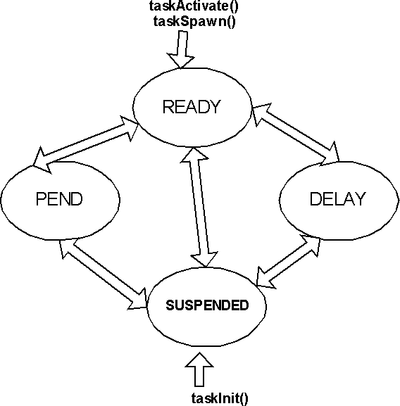
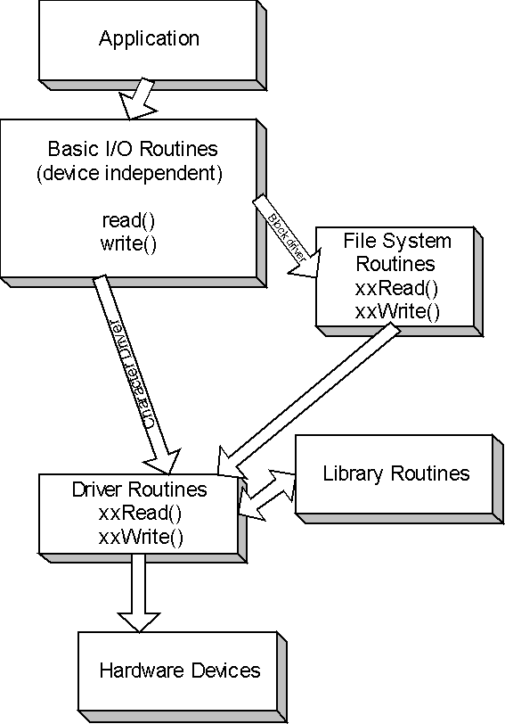
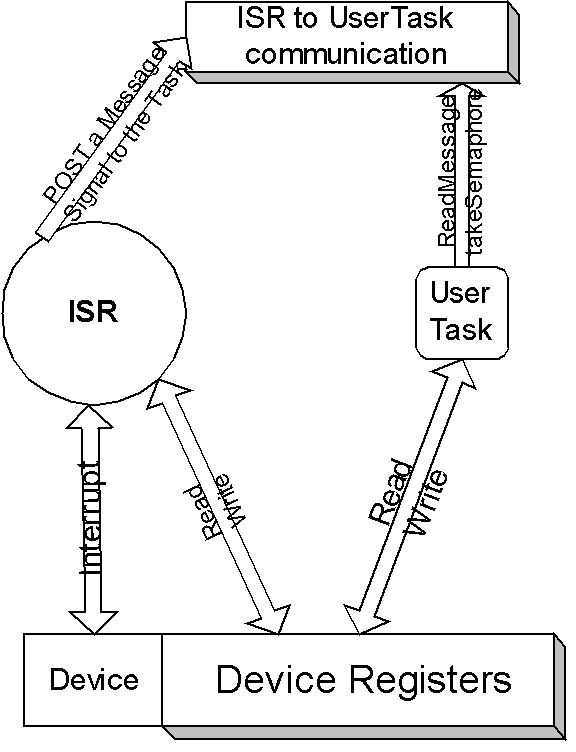

Configuring and setting up the VSB and VIP is known as platform development.
This guide is for device driver developers, who have general background in real time operating systems. This guide addresses device driver development using VxWorks 5.4/Tornado 2.0.
We referred to VxWorks 5.4 programmers manual and other VxWorks website to make sure the content is as accurate as possible.
Operating systems can be categorized into real-time and non-real-time systems. A real-time system is defined as a system where the response time for an event is predictable and deterministic with minimal latency. The architecture of the operating system's scheduler, also referred to as the dispatcher, has a significant impact on the responsiveness of the OS. Preemptive scheduling ensures the highest priority task/thread always runs and doesn’t relinquish the CPU until its work is done or a higher priority task becomes available. A preemptive scheduler also implies a real-time kernel. Several aspects to consider when selecting a real-time OS are:
VxWorks provides a real-time kernel that interleaves the execution of multiple tasks employing a scheduling algorithm. Thus the user sees multiple tasks executing simultaneously. VxWorks uses a single common address space for all tasks thus avoiding virtual-to-physical memory mapping. Complete virtual memory support is available with the optional vxMem library.
A task is an independent program with its own thread of execution and execution context. Every task contains a structure called the task control block that is responsible for managing the task's context. A task's context includes
Every task has a name and an ID associated with it. Each task is assigned a default priority as well. A task has four states as shown below.
A task can be created with taskInit() and then activated with taskActivate() routine or both these actions can be performed in a single step using taskSpawn(). Once a task is created it is set to the suspend state and suspended until it is activated, after which it is added to the ready queue to be picked up by the scheduler and run. A task may be suspended by either the debugging your task, or the occurrence an exception. The difference between the pend and suspend states is that a task pends when it is waiting for a resource. A task that is put to sleep is added to delay queue.
VxWorks scheduler determines which task to own the CPU time. By default, the scheduler runs a preemptive algorithm. Preemptive scheduler guarantees that the highest priority task preempts a lower priority task. There are some special cases called priority inversion which is discussed in advanced concepts.
The scheduler can be set to run round robin algorithm which is a time slicing algorithm.
Mutual exclusion can be implemented in VxWorks in the following three ways.
VxWorks supports three types of semaphores, binary, mutual exclusion, and counting, each of which is optimized for a specific application. Semaphores are generally used for task synchronization and communication, and protection of shared resources also referred to as concurrency control or mutual exclusion.
VxWorks supports messages queues for inter task communication. A variable number of messages, each of variable length, can be sent to any task. ISRs and tasks can send messages but only tasks can receive messages.
Multiple tasks can wait on a single message queue and can be ordered by their priority. Messages can be marked urgent for faster delivery.
VxWorks supports general facilities like pipes, sockets, RPC and signals for network inter task communications.
VxWorks provides facilities like Asynchronous IO and buffered IO for application and driver development. It is also POSIX library.
Interrupt is the mechanism by which a device seeks the attention of CPU. The piece of user code that the CPU executes on interrupt is called interrupt service routine (ISR). The Kernel doesn't transfer execution to the ISR immediately. It does some house keeping before the ISR is executed. The delay between the occurrence of interrupt and time spent by the kernel before it executes the first ISR instruction is called Interrupt response time. This equals the sum of interrupt latency and time to save CPU's context and execution time of kernel ISR entry function.
VxWorks provides a special context for interrupt service code to avoid task context switching, and thus renders fast response. VxWorks supplies interrupt routines which connect to C functions and pass arguments to the functions to be executed at interrupt level. To return from an interrupt, the connected function simply returns. A routine connected to an interrupt in this way is referred to as an interrupt service routine (ISR) or interrupt handler. When an interrupt occurs, the registers are saved, a stack for the arguments to be passed is set up, then the C function is called. On return from the ISR, stack and registers are restored.
IntConnect(INUM_TO_IVEC(intNum), intHandler, argToHandler) allows C functions to be connected to any interrupt. The first argument to this routine is the byte offset of the interrupt vector to connect to. The second argument is the interrupt handler and the last is any argument to this handler.
One can disable interrupts using intLock() for synchronization. Care should be taken to re-enable the interrupts using intUnlock(). If you are planning for nested interrupts, you should not disable interrupts using intLock(). Also make sure that your code is reentrant and you allocate enough stack resources for nesting.
Points to remember
Points to remember
ISR can communicate with user tasks via
Understanding ISR and what goes on within interrupt handler is the key to designing your driver. Many real world drivers just have an interrupt handler and interact with user and device without the rest of the interfaces. Please refer to 7) for examples.
A driver supplies a uniform device independent logical interface to the user to interact with a device. A device can be a piece of hardware such as your hard drive or can be a piece of software such as a pipe or a socket, but a driver is always a software module. A driver can control multiple devices. If the architecture allows virtual memory, driver works in a logical/virtual address space, but a device works in a physical address space.
All interactions with devices in VxWorks are performed through the IO sub-system. VxWorks treats all devices as files. Devices are opened just like normal files are for IO operations. An example device is /tyCo/0 that represents a serial channel. When a filename is specified in an IO call by the user task, the IO system searches for a device with a name that matches the specified filename. Two most important devices are character devices or non-block and block devices. Character devices perform IO operations character by character. Block devices are used for storing file systems. Block devices perform IO in blocks of characters and can support complicated operations such as random access. Block devices are accessed via file system routines as shown in the above figure. The driver interface to character devices are not filesystem routines.
Points to remember
creat(), remove(), open(), close(), read(), write(), ioctl() are the seven standard driver interfaces that can be exposed to the user. Not all of the interfaces are mandatory.
Four steps are involved in the driver design and install process.
The following piece of code is the driver initialization routine.
STATUS myDrv()
{
myDrvNum = iosDrvInstall(myDevCreate /* create */ ,
0 /* remove() is null */ ,
myDevOpen /* open() */ ,
0 /* close() */ ,
myDevRead /* read() */ ,
myDevWrite /* write() */ ,
myDevIoctl /* ioctl() */
);
/* connect the ISR */
intConnect(intvec, myIntHandler, 0);
}
As shown in the above piece of code, we can skip the driver interface routines like remove and close. But it is always a good practice to include them and return an error. VxWorks returns an error on your behalf, if it doesn't find a particular interface. Also you can initialize any relevant data structures in the myDrv routine.
Points to remember
Capture the essence of your device in a structure. This structure will hold all the information related to your device. This structure will be passed back by the IO subsystem, as a parameter to the rest of the interfaces like read(), write(), ioctl() etc., You can even get this structure within your ISR.
typedef struct {
DEV_HDR myDevHdr;
BOOL isDevAvailable;
Semaphore getAccess;
} MY_DEV;
If you are using semaphores to control the access to your device, make sure you create and initialize them before you make use of them.
Once you are ready with your structure, pass it as an address to iosDevAdd as shown in the below piece of code.
STATUS myDevCreate(char *name, …)
{
MY_DEV *pMyDevice;
status = iosDevAdd(pMyDevice, /* pointer to MY_DEV device */
name, /* input param */
myDrvNum /* return value from iosDrvInstall */
);
/* do other work as necessary */
}
iosDevAdd takes three arguments. The first argument is the address of device descriptor structure. A device descriptor structure always starts with DEV_HDR structure as it's first member. It can contain any other private data structures for your own use. The second argument is the name of the device. The third argument is the driver number, the return value of iosDrvInstall.
Points to remember
IO subsystem searches the correct device based on device name and driver number. They are held in a header structure DEV_HDR.
STATUS myDevOpen(MY_DEV * pMyDev, char *additionalInfo, int mode)
{
}
STATUS myDevRead(MY_DEV * pMyDev, char *buffer, int nBytes)
{
/* read nBytes from the device and put them into the buffer*/
}
STATUS myDevWrite(MY_DEV * pMyDev, char *buffer, int nBytes)
{
/* write to the device from buffer if the device has room*/
}
IOCTL needs some explanation. It is through IOCTL that a user can control the device. This the preferred way of controlling the device. The code within the IOCTL depends upon the way your device perform and the way you want to control the device.
STATUS myDevIoctl(MY_DEV * pMyDev, int request, int arg)
{
switch (request) {
CASE SET_DEVICE:
/* set the device */
CASE MODIFY_PARAM:
}
}
Void myIntHandler(arg)
{
/* disable any further interrupts */
intLock();
// now read the interrupt register and indicate to the other tasks that you received an interrupt.
// You can do this in multiple ways. Refer to 'Tour of VxWorks'
// One easy way is to give a semaphore
semGive(getAccess);
/* re-enable interrupts*/
intUnlock();
return;
}
Once your interrupt handler has been installed using intConnect(), the kernel will call your ISR when the CPU receives an interrupt from the device.
A block device is a device that is organized as a sequence of individually accessible blocks of data. A block is the smallest addressable unit on a block device. Block devices have a slightly different interface than that of other IO drivers. Rather than interacting directly with the IO system, block drivers interact via file-system. The file system in turn interacts with the IO system. Every block device is typically associated with a specific file system. DOS, SCCI, and raw file systems are supported.
Block devices are divided into two categories based on their write capabilities. Direct Access BLOCK Devices are slightly different from SEQUENTIAL Devices in that data can be written only to the end of written medium for sequential devices, where as for true block devices, data can be written any where randomly.
There is no difference between BLOCK and Sequential devices as far as reading from the device is concerned.
A device driver for a block device must provide a means for creating logical device structure, a BLK_DEV for direct access block devices and SEQ_DEV for sequential block devices. BLK_DEV/SEQ_DEV structures describe the device, contain routines to access the device, describe the device in a general fashion so that the underlying file system that serves this device can know about this device.
Points to remember
The following three steps are involved in writing a Block device driver. I shall explain this example by using ram driver with DOS as the underlying file system.
Ram driver emulates a disk driver, but actually keeps all data in memory. The memory location and size are specified when the "disk" is created. The RAM disk feature is useful when data must be preserved between boots of VxWorks or when sharing data between CPUs. The RAM driver is called in response to ioctl() codes in the same manner as a normal disk driver. When the file system is unable to handle a specific ioctl() request, it is passed to the ramDrv driver. Although there is no physical device to be controlled, ramDrv does handle a FIODISKFORMAT request, which always returns OK. All other ioctl() requests return an error and set the task's errno to S_ioLib_UNKNOWN_REQUEST.
Declare all your data structures, create your semaphores, initialize the interrupt vectors and enable the interrupts just as been discussed for character devices.
This step is required, only when you are creating your own device and not making use of existing block devices (like ram drive, scsi device etc.,) supported by VxWorks. Check VxWorks reference manual and programmers guide before you fill out the interfaces.
Points to remember
If these interfaces are filled, the file system will call them for you, if not it will call the default routines of the file system itself.
BLK_DEV is a structure that has the address of certain routines. If you decided to fill the structure, just declare the required interfaces and pass the address of the interfaces to BLK_DEV.
Declare your private device descriptor structure. Or you can directly use BLK_DEV structure.
typedef struct {
BLK_DEV myDev;
Bool privateData;
Semaphore giveAccess;
} DEVICE;
The various fields within BLK_DEV structure are
bd_blkRd: Address of driver routine that reads blocks from the device, if your device is myBlkDevice, then call this routine as myBlkDevRd.
STATUS myBlkDevRd(
DEVICE * pDev, /* pointer to driver's device descriptor.
* The file system passes the address of BLK_DEV structure.
* These two are equivalent because BLK_DEV is the first item of DEVICE structure */
Int startBlk,
Int numBlks,
Char * pBuf /*the address where data read is copied to */
);
bd_blkWrt: Address of driver routine that writes blocks to the device
STATUS myBlkDevWrt(
DEVICE * pDev, /* pointer to driver's device descriptor. */
Int startBlk,
Int numBlks,
Char * pBuf /*the address where data is copied from and written to the device */
);
bd_ioctl: Address of driver routine that performs the device IO control
STATUS myBlkDevIoctl(
DEVICE * pDev, /* pointer to driver’s device descriptor. */
Int functioncode, /* ioctl function code */
Int arg
);
bd_reset: Address of driver routine that performs the device reset. Null if none
STATUS myBlkDevReset(
DEVICE * pDev, /* pointer to driver’s device descriptor. */
);
bd_statusChk: Address of driver routine that checks the device status. Null if none
STATUS myBlkDevStatus(
DEVICE * pDev, /* pointer to driver’s device descriptor. */
);
bd_removable: TRUE if the device is removable(like floppy)
bd_nBlocks: Total number of blocks on the device
bd_nbytesPerBlk
bd_lksPerTrack
bd_nHeads
bd_retry: Number of times to retry failed reads or writes
bd_mode: Deice mode (write protected etc.,), typically set to O_RDWR
bd_readyChanged: True if the device ready status has changed. Defaults to true
A similar structure SEQ_DEV needs to be filled if your device is sequential.
Include your header files for the file system library. In our case it is dos file system. The libaray is dosFsLib.
BLK_DEV *pBlkDev; // declare your BLK_DEV structure
DOS_VOL_DESC *pVolDesc;
PBlkDev = ramDevCreate(0, 512, 400, 400, 0);
PvolDesc = dosFsMkfs("DEV1:", PblkDev);
Explanation about the above code.
BLK_DEV *ramDevCreate
(
char * ramAddr, /* where it is in memory (0 = malloc) */
int bytesPerBlk, /* number of bytes per block */
int blksPerTrack, /* number of blocks per track */
int nBlocks, /* number of blocks on this device */
int blkOffset /* no. of blks to skip at start of device */
}
if you have already pre-allocated memory, pass the address as the first argument. If not, VxWorks will allocate memory on your behalf using malloc, if you pass zero as the first argument.
DOS_VOL_DESC *dosFsMkfs
(
char * volName, /* volume name to use */
BLK_DEV * pBlkDev /* pointer to block device struct */
)
dosFsMkfs routine calls dosFsDevInit() with default parameters and initializes the file system on the disk by calling ioctl() with FIODISKINIT.
DOS_VOL_DESC *dosFsDevInit
(
char * devName, /* device name */
BLK_DEV * pBlkDev, /* pointer to block device struct */
DOS_VOL_CONFIG * pConfig /* pointer to volume config data */
)
This routine takes a block device structure (BLK_DEV) created by a device driver and defines it as a dosFs volume. As a result, when high-level I/O operations (e.g., open(), write()) are performed on the device, the calls will be routed through dosFsLib. The pBlkDev parameter is the address of the BLK_DEV structure which describes this device. This routine associates the name devName with the device and installs it in the VxWorks I/O system’s device table. The driver number used when the device is added to the table is that which was assigned to the dosFs library during dosFsInit(). (The driver number is placed in the global variable dosFsDrvNum.)
The BLK_DEV structure contains configuration data describing the device and the addresses of five routines which will be called to read sectors, write sectors, reset the device, check device status, and perform other control functions (ioctl()). These routines will not be called until they are required by subsequent I/O operations.
The pConfig parameter is the address of a DOS_VOL_CONFIG structure. This structure must have been previously initialized with the specific dosFs configuration data to be used for this volume. This structure may be easily initialized using dosFsConfigInit(). If the device being initialized already has a valid dosFs (MS-DOS) file system on it, the pConfig parameter may be NULL. In this case, the volume will be mounted and the configuration data will be read from the boot sector of the disk. (If pConfig is NULL, both change-no-warn and auto-sync options are initially disabled. These can be enabled using the dosFsVolOptionsSet() routine.)
Finish your interrupt handler routine. You just need to connect the ISR using intConnect.
I will cover two sample drivers. The first one is a standard serial driver. The second one is a hypothetical network processor driver, which doesn't follow the required conventions. Both of these are character drivers.
This driver deals with PowerPC 8245 DUART. You can download PPC 8245 manual online from here MPC8245. Look into chapter 11 and 12 of this manual. This example deals with NS16550 or equivalent UART (Universal Asynchronous Receiver Transmitter).
// forward declare our interrupt handler
void DuartISRHandler();
#define EUMBARR_BASE DEFINE_YOUR_OWN
#define DUART_CH1_IVR EUMBARR_BASE+0x51120
#define IACK_REG EUMBARR_BASE+0x600A0
#define EOI_REG EUMBARR_BASE+0x600B0
Embedded utilities Block(EUMBARR) holds the EPIC register definition. It serves as an offset for the rest of the registers within EPIC unit. The programming model of EPIC is as follows.
#define DCR EUMBARR_BASE+0x4511
#define ULCR EUMBARR_BASE+0x4503
#define UFCR EUMBARR_BASE+0x4502
#define UIIR UFCR
#define URBR EUMBARR_BASE+0x4500
#define UTHR URBR
#define UDLB URBR
#define UIER EUMBARR_BASE+0x4501
#define UDMB UIER
#define ULSR EUMBARR_BASE+0x4505
#define UDSR EUMBARR_BASE+0x4510
Let us get into details about the DUART itself . Refer to 12.3 DUART initialization sequence.
/*
* declare buffersize to be greater then 14.
* This the value we set for FIFO capacity, 14 bytes of data.
* We make use of a ring buffer to handle the incoming and out going data.
* A ring Buffer is a circular array (liner array around which we wrap around).
* */
#define BUF_SIZE 141
typedef struct {
DEV_HDR DuartHdr;
Char readBuf[BUF_SIZE];
Char writeBuf[BUF_SIZE];
Int readCount;
Int readPtr;
Int writePtr;
Int writeCount;
Int mode;
BOOL intUse;
Semaphore getRDAccess;
Semaphore getWRAccess;
} MY_DEV;
/* some global definitions */
MY_DEV gDuartStruct;
Static int gDuartDrvNum;
STATUS DuartInit()
{
*ULSR = 0; /* This lets access to UDLB, UAFR and UDMB. */
*UDLB = 1;
*UDMB = 0;
/* we have set divisor to be 16, the max baud rate allowed. */
*UAFR = 0; /* disable concurrent writes */
*ULSR = (1 << 1) | 1; /* set bit 8 bit characters (bits 0 and 1) */
*DCR = 0; /* route the interrupts to EPIC in four signal mode */
*UIER = (1 << 2) | (1 << 1) | 1; /* we are not setting modem status. We program assuming no modem is going to be connected. */
*UFCR = (1 << 7) | (1 << 6) | (1 << 3) | (1 << 2) | (1 << 1) | 1; /* enable the FIFO Tx and Rx for 14 bytes */
*DUART_CH1_IVR = 0; /* clear it first; */
int priority = 16; /* actual priority will be 1 */
int vector = 0x7; /* the vector number associated with UART interrupt.
* make sure no one else has this vector already taken.
* It returns vector 128 when IACK register is read.
* */
*DUART_CH1_IVR = (1 << priority) | (1 << vector);
gDuartDrvNum = iosDrvInstall(myDevCreate /* create */ ,
0 /* remove() is null */ ,
DuartOpen /* open() */ ,
DuartClose /* close() */ ,
DuartRead /* read() */ ,
DuartWrite /* write() */ ,
DuartIoctl /* ioctl() */
);
// register our ISR
intConnect(128, DuartISRHandler, 0);
gDuartStruct.getWRAccess = semBCreate(SEM_Q_PRIORITY, SEM_FULL);
gDuartStruct.getRDAccess = semBCreate(SEM_Q_PRIORITY, SEM_EMPTY);
}
Inside the DuartInit routine, we initialized various registers. One point to note is we created two semaphores, one for read and one for write. They protect the read and write buffers readBuf and writeBuf. getWRAccess has been created full, meaning the write semaphore is available immediately for access, which indicates that the user can write to the DUART and writeBuf can hold bytes. getRDAccess has been created empty, meaning there is no data available for reading immediately from readBuf, until someone gives the semaphore.
Semaphores are taken in read and write routines and given in the ISR. ISR can modify readPtr and writeCount. It doesn't modify writePtr and readCount. DuratRead() routines modifies readCount and doesn't modify readPtr. DuratWrite() routine modifes writePtr and doesn't modify writeCount. This way, I am making sure that no race conditions exisit.
STATUS DuartCreate(char *name, …)
{
MY_DEV *pDuart = &gDuartStruct;
status = iosDevAdd(pDuart, /* pointer to MY_DEV device */
name, /* input param */
gDuartDrvNum /* return value from iosDrvInstall */
);
}
STATUS DuartOpen(MY_DEV * pDuart, char *remainder, int mode)
{
/* serial devices should have no file name remainder */
/* if multiple opens occur, we reject, note that I have not protected inUse variable here. They should be protected */
if (remainder[0] != 0 || pDuart->intUse) {
return ERROR;
}
else {
pDuart->intUse = true; // only one access at a time
pDuart->mode = mode;
return (int)pDuart;
}
}
STATUS DuartClose(char *name, …)
{
pDuart->intUse = false;
return OK;
}
// read from the DUART and Put it into the buffer
// here we will not always be able to read the required number of bytes for two reasons.
// 1) Not enough data is available
// 2) We code it little lazy, and the user has to do one more read to get the data, if readPtr has wrapped around
// we manipulate pDuart->readPtr only in the ISR and pDuart->readCount from this code to avoid race conditions
STATUS DuartRead(MY_DEV * pDuart, char *buffer, int nBytes)
{
/* read nBytes from the device and put them into the buffer */
/* define RDMASK and WRITEMASK */
if (pDuart->mode & RDMASK) // if it is readable
{
}
/* this is a blocking call.
* If there is no data available, we cannot proceed further,
* until data arrives and we release the semaphore from the ISR.
*/
semTake(pDuart->getRDAccess, WAIT_FOREVER)
/* grab whatever data is available and return it,
* don't wait till you get all the required nBytes data.
*/
int NumBytestoRead = 0;
int I = 0;
int readPtr = pDuart->readPtr;
NumBytestoRead = readPtr - pDuart->readCount;
if (pDuart->readCount >= readPtr) {
// no race condition detected
while ((NumBytestoRead > 0) && (pDuart->readCount > readPtr))
{
buffer[I] = pDuart->readBuf[pDuart->readCount++];
I++;
pDuart->readCount %= BUF_SIZE;
NumBytestoRead--;
}
}
if (pDuart->readCount < readPtr)
{
while ((NumBytestoRead > 0) && (pDuart->readCount < readPtr))
{
buffer[I] = pDuart->readBuf[pDuart->readCount++];
I++;
NumBytestoRead--;
}
}
return I;
}
/* write to the device from buffer if the device has room */
// We manipulate the writePtr from here and writeCount from the ISR
STATUS DuartWrite(MY_DEV * pDuart, char *buffer, int nBytes)
{
// define RDMASK and WRITEMASK
if (pDuart->mode & WRITEMASK) // if it is writeable mode
{
}
Int NumBytestoWrite = nBytes;
Int I = 0;
Int writeCount = pDuart->writeCount;
if (pDuart->writePtr >= writeCount) {
// no race condition detected
while ((NumBytestoWrite > 0) && (pDuart->writePtr >= writeCount)) {
pDuart->writeBuf[pDuart->writePtr++] = buffer[I];
I++;
pDuart->writePtr %= BUF_SIZE;
NumBytestoWrite--;
}
}
if (pDuart->writePtr < writeCount)
{
while ((NumBytestoWrite > 0) && (writeCount >= pDuart->writePtr))
{
pDuart->writeBuf[pDuart->writePtr++] = buffer[I];
I++;
NumBytestoWrite--;
}
}
return I;
}
IOCTL requires some explanation. IOCTL provides an interface for a user to control the device, and is the preferred way of controlling the device. The implementation of IOCTL is dependant upon the way your device performs and how you want to control the device.
STATUS DuartIoctl(MY_DEV* pDuart, int command, int baudrate)
{
switch(command)
{
CASE SET_DEVICE:
/* set the device*/
break;
CASE MODIFY_BAUD:
// our argument has the new baud rate.
// we will have to modify the registers to set the baud rate
// you need to know the clock frequency of your CPU.
// assume it is a global value
int divisor = clock_frequency/ (baud* 16);
// UDLB is the least significant byte register and UDMB is the most significant.
// each register is 8 bits wide, so the max value for 8 bits of data is 255.
// if divisor is less then 256, we assign it to UDLB and make UDMB zero.
If(divisor < 256)
{
*UDLB = divisor;
}
else
{
*UDMB = divisor - 255;
*UDLB = 255;
}
break;
default:
break;
}
}
Let us finish the interrupt handler routine. We enter into the handler after the kernel has determined that the vector within IACK register matches to DuartISRHandler.
// The logic for the code is as follows
#define lastThreeBits (1 << 3) | (1 << 2) | (1 << 1)
#define RxLineError (1 << 2) | (1 << 1)
#define RxDataAvailable (1 << 2)
#define charTimeOut (1 << 3) | (1 << 2)
#define uthrEmpty (1 << 1)
#define RFE (1 << 7)
#define FE (1 << 3)
#define TxEmpty (1 << 6)
#define TxHrEmpty (1 << 5)
void DuartISRHandler()
{
int oldlevel = intLock(); // let us lock interrupts
unsigned char regUIIR = *UIIR;
switch(regUIIR & lastThreeBits)
{
// we handle both cases in the same fashion
CASE RxLineError:
CASE uthrEmpty:
// ULSR gives us the status of the interrupt that just occurred on the DURAT.
unsigned char regULSR = *ULSR;
if(regULSR & RFE)
{
// Framing Error
logMsg("Framing Error DUART");
}
if((regULSR & TxEmpty) || (regULSR & TxHrEmpty))
{
// Tx is empty, we can write more to the device.
if(gDuartStruct.writeCount > gDuartStruct.writePtr)
{
While(!(*UDSR & 2) && (gDuartStruct.writeCount >= gDuartStruct.writePtr))
{
*UTHR = writeBuf[gDuartStruct.writeCount++];
gDuartStruct.writeCount %= BUF_SIZE;
}
}
if(gDuartStruct.writeCount <= gDuartStruct.writePtr)
{
while(!(*UDSR & 2) &&(gDuartStruct.writeCount <= gDuartStruct.writePtr))
{
*UTHR = writeBuf[gDuartStruct.writeCount++];
}
}
// indicate to the user that write buffer can be filled.
semGive(gDuartStruct.getWRAcess);
}
break; // end case
CASE RxDataAvailable:
if(gDuartStruct.readPtr > gDuartStruct.readCount)
{
while(!(*UDSR & 1) && (gDuartStruct.readPtr > gDuartStruct.readCount))
{
readBuf[gDuartStruct.readPtr++] = *URBR;
gDuartStruct.readPtr %= BUF_SIZE;
}
}
if(gDuartStruct.readPtr < gDuartStruct.readCount)
{
while(!(*UDSR & 1) && (gDuartStruct.readCount >= gDuartStruct.readPtr))
{
readBuf[gDuartStruct.readPtr++] = *URBR;
}
}
// indicate to the user that read buffer has more data.
semGive(gDuartStruct.getRDAcess);
}
intUnlock(oldlevel); // re-enable interrupts
}
Once we left the ISR, the kernel will call EOI (end of Interrupt) and will notify the CPU.
In the real world however, many times you will not be using all the interface functions. So your design will not involve adding a device (iosDevAdd), installing interfaces (iosDrvInstall) etc,.
You directly declare your ISR and connect it to a particular vector. After that you can communicate to your device back and forth via interrupts and via user task that processes the responses from the ISR.
Here is a diagram which helps you understand more clearly.
Once you have compiled your driver module, you can link it statically or load it dynamically.
For the DUART driver to be used, you have to install the device and add the device. You can modify your DuartInit routine to automatically call DuartCreate function.
fd = DuartCreate("/duart0");
Make sure your DuartInit is called during your system initialization, say at the end of SysHardwareInit()
Write a user application to use the duart by using the following code.
Open the device with required permissions.
if((fd=open("/duart0", O_RDWR, 0666)) == ERROR)
{
}
else
{
// you can read and write to the device
write(fd, buf, size);
read(fd, buf, size);
close(fd);
}
For debugging your driver, connect your Tornado and use GDB.
When the scheduler preempts a task it has to store the current state of the task in task's context storage area and will retrieve it later when the task is resumed. The current runnable tasks context is retrieved. This process of switching the contexts is called task switching or context switching.
If a piece of code can be used by more then one task without the fear of data corruption, then it is said to be Reentrant. A reentrant function can be interrupted at any time and resumed latter without loss or corruption of data.
To achieve reentrancy, use either local variables (i.e variables on stack rather then on heap, and CPU registers etc.,) or treat the code as critical section and protect the data. Most library routines are reentrant within VxWorks. If a function ends with _r(), then it is non reentrant.
Assume three tasks t1, t2, t3 with task priorities p1, p2, p3 such that p1 > p2 > p3. If task t3 is currently executing and holds access to shared resource s1 (ex. by holding a semaphore sem1), and if t1 preempts t3 and wants to access s1 via the sem1, t1 will be suspended as soon as it wants to access sem1, which is held by t3. So to prevent deadlock, priority of task t3 will be made greater than or equal to that of t1 (i.e p3 >= p1) till t3 gives the semaphore and relinquishes it's access to s1. Tasks t2 and t1 cannot preempt t3 until t3 gives sem1.
To support priority inversion, RTOS should support dynamic priorities.
In VxWorks, all code and text live together in a single address space. (VxWorks has come up with new version called AE which has different user and kernel address spaces). So if your code is poorly written, it can actually enter the kernel text and corrupt the OS, which can cause some serious problems. Having a single common address space improves the performance of your system. When you are using virtual memory, you still have to map between virtual and physical memory within your driver.
Depending upon your processor and BSP design, typically CPU caches data and instructions for improved performance. If you are DMAing data between your device and RAM, then your driver should guarantee cache coherency. This is typically done in two ways.
Select call lets your driver support multiple devices and a task can wait on all or some of these devices at the same time for at least one of the devices to be ready for IO. These tasks can specify timeout period for the devices to become ready.
Most of the functionality for select call is supported in selectLib library. Your ioctl() is called whenever user calls select() with an argument FIOSELECT. To support select() call,
Configuring and setting up the VSB and VIP is known as platform development.

VxWorks is a robust operating system; it has many useful and powerful features for you to use in your project.

All VxWorks projects are different, but they all require hardware configuration.

Step-by-step instructions for running the VxWorks 6.9.3.1 BSP on the Zynq-7000 SoC.